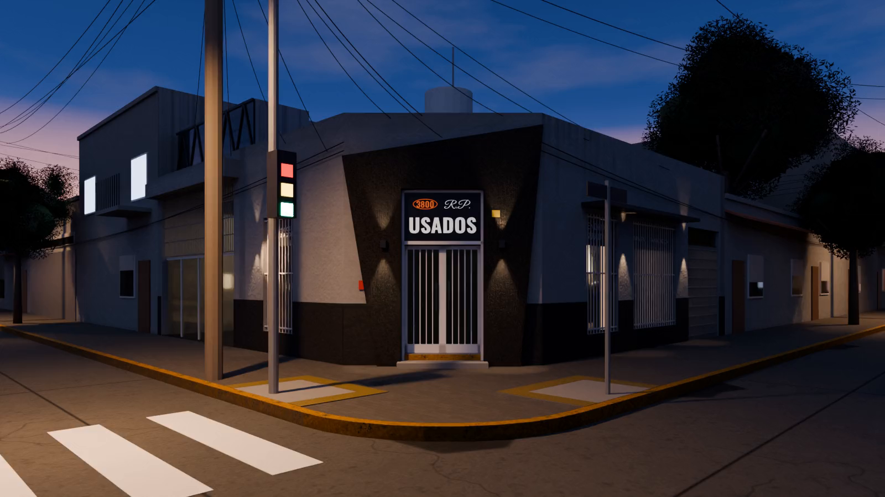

Ciudadela / RP Usados
Trayectoria
en movimiento.
Contexto de prueba con el poster aprobado. El hero productivo permanece intacto.
El catálogo / interacción B
El vehículo,
en primer plano.
La misma unidad DEMO en tres vistas para probar la navegación. Las cards comparten Cambio de plano editorial en los cuatro sistemas.
La marca / un contexto de lectura
Experiencia.
Trato cercano.
RP Usados está en Ciudadela desde 1990. Esta exploración acompaña la lectura y los cambios de contexto sin alterar el contenido productivo.
Conocé dónde estamosVolver a las unidadesLa fotografía / galería
Otra forma
de acercarte.
Pasá por la fotografía y sus controles. Cambiá de imagen para evaluar el cursor sobre colores y materiales distintos.
01 / 03
Vení a conocernos
Chacabuco 399.
Ciudadela.
Un contexto para botones, enlaces y superficies oscuras.
WhatsApp: [dato pendiente — confirmar con el cliente]
Abrir ubicación en Google Maps